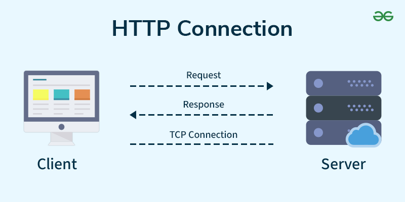

What is HTTP?
HTTP is a collection of request/response protocols that share a common interface.
It operates on a Client Server communication model which is a structure where one device requests data (the Client) and the other device provides the requested data (the server).
- The client is typically a web browser like Google or Safari operated by a user. The browser submits requests on behalf of the user by sending messages to the target server.
- The server is remote infrastructure designed specifically to host web resources. The servers job is to continually listen for requests, process them, and return a response containing the requested resources.

Every HTTP response comes with a numeric Status Code categorized into functional blocks.
These codes allow for automated error handling, user redirection, and security controls.
Status Codes| Code Block | Classification | Technical Operational Meaning |
|---|---|---|
| 1xx | Informational | Request received and recognized; the processing protocol is ongoing. |
| 2xx | Success | The action was successfully received, understood, and accepted by the server (200 OK). |
| 3xx | Redirection | Further action must be taken by the client to fulfill the request. The resource has moved. |
| 4xx | Client Error | The request contains bad syntax or cannot be fulfilled. The client is at fault. |
| 5xx | Server Error | The server failed to fulfill a valid request due to an internal error. |